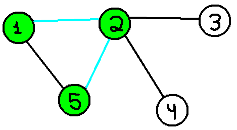
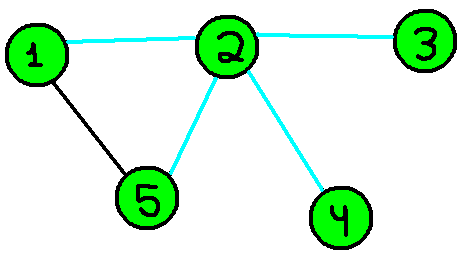
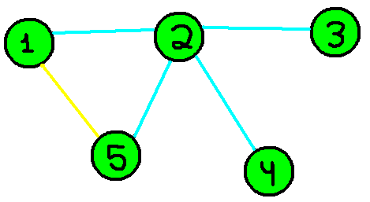

Uma aresta que liga um vértice u a outro v só está na DFS tree se saímos de u para encontrar v na execução da DFS, ou vice-versa (todas as outras arestas serão consideradas back-edges). Agora tome como exemplo o grafo da imagem acima e imagine um algoritmo padrão de DFS com a raiz sendo o vértice 1. Ao iniciar no vértice 1, nossa DFS segue em direção ao 2, ou seja, a aresta (pintada em ciano)que liga os vértices 1 e 2 será considerada uma aresta da DFS tree.

De forma semelhante, saímos do vértice 2 e encontramos o vértice 5, ou seja, a aresta que liga 2 a 5 também é uma aresta da DFS tree.

Entretanto, ao chegar no vértice 5 nos damos conta que não temos mais vértices na vizinhança para visitarmos, então, nossa DFS volta à chamada do vértice 2 e continuamos explorando as adjacências do vértice 2. Do vértice 2, decidimos ir para o vértice 3, então a aresta que liga o vértice 2 ao vértice 3 também é uma aresta da DFS tree.

De forma semelhante ao ocorrido no vértice 5, o vértice 3 também não tem mais vértices em sua vizinhança que ainda não foram visitados, então, nossa chamada recursiva da DFS, volta ao vértice 2, e, então, exploramos o último vértice que faltava, o vértice número 4. Uma vez que o vértice número 4 também não tinha sido visitado, e estamos indo para ele a partir do 2, a aresta que liga 2 a 4 também é uma aresta da DFS tree. Como não existem mais vértices a serem encontrados, nossa DFS para sua execução.

Com o fim da DFS, agora temos todas as arestas pertencentes à DFS tree pintadas de ciano, e por consequência, todas as que não foram pintadas são consideradas back-edges (agora pintadas em amarelo).

Por simplicidade, e para melhor visualização de sua estrutura, vejamos a árvore por outro ponto de vista.

Com isso, torna-se possível começar a perceber certos padrões de ciclos, e também imaginar onde as pontes do grafo parecem estar, assuntos que veremos mais adiante.